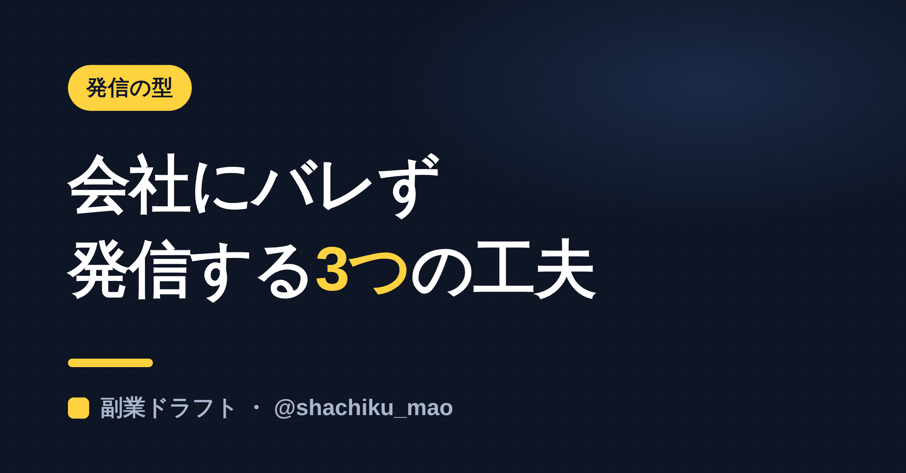
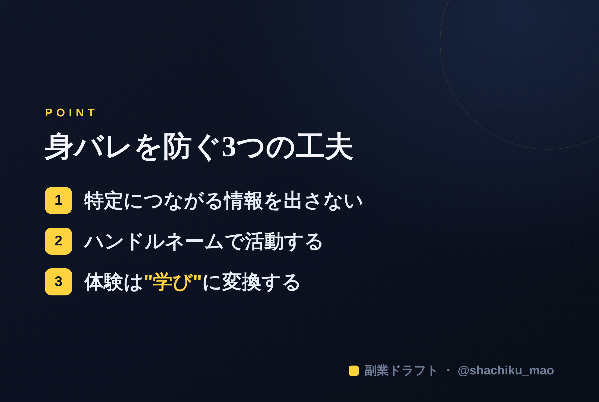

使い方
1. 「タイトルをコピー」→ note のタイトル欄に貼る
2. オレンジのラベルの画像（見出し画像）を note の見出し画像に設定
3. 「本文1をコピー」→ note本文に貼る
4. 青いラベルの位置（本文の途中）に、同じ名前の画像をアップして挿入
5. 「本文2をコピー」→ 続きを貼る
※ 見出しが普通の文字になったら、その行を選んで「大見出し」に設定してください
1. 「タイトルをコピー」→ note のタイトル欄に貼る
2. オレンジのラベルの画像（見出し画像）を note の見出し画像に設定
3. 「本文1をコピー」→ note本文に貼る
4. 青いラベルの位置（本文の途中）に、同じ名前の画像をアップして挿入
5. 「本文2をコピー」→ 続きを貼る
※ 見出しが普通の文字になったら、その行を選んで「大見出し」に設定してください
会社にバレずに副業発信する方法｜身バレを防ぐ3つの工夫
見出し画像に設定：seo-05.png

「副業の発信をしたいけど、会社や知り合いにバレたくない」——これは会社員が発信をためらう一番の理由です。この記事では、匿名を保ちながら発信を続けるための現実的な工夫を3つ紹介します。
※ 本記事は一般的な情報発信の注意点です。副業の可否は勤務先の規定に従ってください。
① 特定につながる情報を"最初から"出さない
身バレは、1つの投稿ではなく「情報の積み重ね」で起きます。次のような要素は、出さない・ぼかすのが基本です。
- 本名・顔・勤務先・業界が特定できる話
- 住んでいる地域・よく行く店・最寄り駅
- 社内しか知らない具体的なエピソード
AIに「この体験を、身バレしない範囲で抽象化して」と頼むと、安全な表現に直してくれます。
② "ペルソナ（発信用の名前）"で活動する
本名ではなく、発信用の名前（ハンドルネーム）で活動しましょう。アイコンも実写以外にすれば、匿名性はぐっと上がります。「元○○」のように前職を抽象化して名乗ると、身バレを避けつつ専門性は出せます。
③ 経験は"具体エピソード"ではなく"学び"に変換する
体験をそのまま書くと特定されやすいですが、そこから得た"学び"に変換すれば安全です。
- ❌「先週、○○社の案件で〜があった」
- ⭕️「こういう場面では、○○すると上手くいく」
出来事ではなく、学び・気づきを発信する。これだけでリスクは大きく下がります。
本文中に挿入：seo-05-body.png（この記事のポイント）

まとめ
- 特定要素は最初から出さない・ぼかす
- ハンドルネーム＋実写以外のアイコンで活動
- 体験は"学び"に変換して発信する
匿名でも、価値ある発信は十分できます。大事なのは「誰が言ったか」より「何を言ったか」です。
※ ここからは宣伝です。 「経験を身バレしない範囲で発信ネタに変える」ところからAIが手伝うツール「副業ドラフト」を作りました。ヒヤリング・強み棚卸し・Threads3本まで無料で試せます → https://note-threadssf.onrender.com
🎁 発信ノウハウは公式LINEで無料配布中 → https://lin.ee/RzyA13P
役に立ったら、スキ＆フォローで応援してもらえると嬉しいです😊